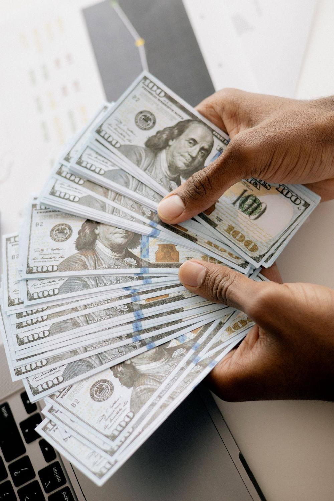

Nama BSU lagi ramai dibicarakan pekerja minggu ini. Kabarnya, pemerintah menyiapkan Bantuan Subsidi Upah sebesar Rp900.000 untuk periode Oktober sampai Desember 2026. Tapi sebelum kamu buru-buru mengecek atau malah mengklik link yang berseliweran di WhatsApp, ada satu hal yang wajib kamu tahu dulu: sampai Senin, 26 Oktober 2026, bantuan ini belum cair dan belum ada pengumuman resmi siapa saja penerimanya.
Artikel ini merangkum fakta terbaru BSU 2026, cara cek BSU 2026 pakai NIK lewat jalur resmi, dan cara membedakan info asli dari hoaks. Semua langkah di bawah ini mengacu pada mekanisme resmi yang sudah dipakai sebelumnya, karena sistem pengecekan untuk 2026 masih disiapkan.
Berapa besar BSU 2026 yang dibicarakan
Skema yang beredar di pemberitaan adalah Rp300.000 per bulan selama tiga bulan, Oktober, November, dan Desember 2026, jadi totalnya Rp900.000 per penerima. Sasarannya sekitar 13,3 juta pekerja. Menurut pemberitaan, dana disalurkan sekaligus, langsung ke rekening bank penerima.
Tapi ingat, ini masih rencana. Menko Perekonomian Airlangga Hartarto pada 6 Oktober 2026 menyebut batas gaji penerima masih jadi pertimbangan. Sampai 26 Oktober 2026, Kementerian Ketenagakerjaan belum merilis aturan terbaru untuk BSU 2026, dan belum ada daftar penerima resmi. Jadi angka Rp900.000 itu wacana yang sedang dibahas pemerintah, bukan janji yang sudah pasti cair.

Fakta terbaru 26 Oktober 2026: belum ada pencairan
Sampai hari ini, Senin 26 Oktober 2026, belum ada pencairan BSU periode Oktober sampai Desember 2026. Belum ada juga pengumuman resmi soal siapa yang berhak menerima. Semua informasi yang beredar masih sebatas rencana pemerintah.
Situs resmi pengecekan, bsu.kemnaker.go.id, per awal Oktober 2026 masih menampilkan informasi BSU tahun 2025 karena sistemnya masih dalam proses pembaruan. Kemnaker lewat akun Instagram resminya pada 13 Oktober 2026 menjelaskan laman BSU belum dapat diakses dan meminta masyarakat menunggu pengumuman resmi program tahun 2026. Jadi kalau kamu membuka situsnya dan statusmu belum muncul, itu bukan berarti kamu pasti tidak dapat.
Cara cek BSU pakai NIK di situs Kemnaker
Begitu layanan pengecekan 2026 dibuka, caranya sama seperti mekanisme sebelumnya. Siapkan KTP kamu, lalu ikuti langkah ini:
- Buka peramban di HP atau laptop, lalu ketik sendiri alamat bsu.kemnaker.go.id. Jangan mengklik link dari pesan yang tidak dikenal.
- Cari bagian Pengecekan NIK Penerima BSU di halaman utama.
- Masukkan 16 digit NIK sesuai KTP, tanpa spasi.
- Isi nama lengkap dan tanggal lahir sesuai KTP bila diminta.
- Isi kode keamanan atau CAPTCHA yang muncul di layar.
- Klik tombol Cek Status, lalu baca hasil yang ditampilkan sistem.
Hasilnya biasanya berupa status: terdaftar, ditetapkan sebagai penerima, atau tersalurkan. Kalau statusmu belum muncul, cek lagi berkala setelah ada pengumuman resmi dari Kemnaker, karena datanya diperbarui bertahap.

Cara cek lewat aplikasi JMO dan PosPay
Selain situs Kemnaker, ada dua jalur resmi lain yang bisa kamu pakai.
Pertama, aplikasi Jamsostek Mobile (JMO) dari BPJS Ketenagakerjaan. Buka aplikasinya, masuk, lalu cari menu pengecekan status calon penerima BSU. Kedua, aplikasi PosPay milik PT Pos Indonesia, terutama kalau penyaluranmu lewat kantor pos. Caranya: buka PosPay, ketuk ikon huruf i di pojok kanan bawah, pilih ikon bantuan, lalu pilih menu Bantuan Subsidi Upah Tahun 2026 dan masukkan NIK KTP kamu.
Tiga jalur ini gratis. Kalau ada pihak yang meminta bayaran supaya statusmu keluar, itu penipuan.
Syarat penerima, pakai acuan tahun lalu
Karena syarat resmi BSU 2026 belum diumumkan, acuan yang bisa dipakai sekarang adalah syarat BSU tahun 2025 berdasarkan Permenaker Nomor 5 Tahun 2025. Syarat itu bisa berubah untuk 2026, jadi jadikan ini gambaran saja:
- Warga Negara Indonesia dengan NIK yang valid.
- Peserta aktif BPJS Ketenagakerjaan.
- Gaji atau upah maksimal Rp3,5 juta per bulan.
- Bukan ASN, TNI, atau Polri.
- Diprioritaskan bagi pekerja yang belum menerima Program Keluarga Harapan (PKH).
Menjadi peserta aktif BPJS Ketenagakerjaan saja tidak otomatis membuatmu menerima BSU. Status penerima tetap bergantung pada verifikasi kriteria dan data yang ditetapkan pemerintah.
Waspada hoaks dan link palsu BSU
Setiap kali ada kabar bantuan, link palsu ikut bermunculan. Kemnaker sudah menegaskan, informasi resmi soal BSU hanya disampaikan lewat kanal resmi kementerian, dan BSU tidak perlu pendaftaran mandiri lewat link apa pun. Itu disampaikan Karo Humas Kemnaker, Faried Abdurrahman Nur Yuliono.
Tanda-tanda link palsu yang wajib kamu hindari: alamat situsnya bukan .go.id, pesannya datang dari nomor tidak dikenal di WhatsApp atau Telegram, dan formulirnya meminta data pribadi, kode OTP, atau informasi rekening. BSU tidak pernah meminta OTP. Kalau kamu menerima pesan seperti itu, jangan diisi dan jangan diteruskan.
Intinya
BSU Rp900.000 untuk Oktober sampai Desember 2026 masih berupa rencana: Rp300.000 per bulan untuk sekitar 13,3 juta pekerja, tapi belum ada pengumuman resmi dan belum ada pencairan sampai 26 Oktober 2026. Cara mengeceknya tetap lewat jalur resmi: situs bsu.kemnaker.go.id, aplikasi JMO, atau PosPay, semuanya gratis. Cek berkala setelah pengumuman resmi keluar, dan jangan percaya link yang mengatasnamakan BSU di luar kanal resmi.